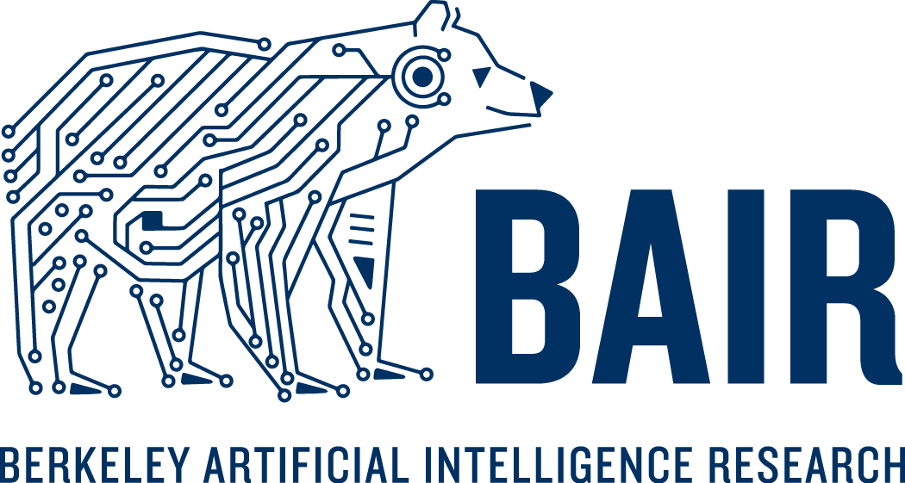

Nicholas Adesina
Experiences

Statistics 198 - Computational Statistics
Head Instructor/Founder
- Authored comprehensive course notes for STAT-198, encapsulating intricate topics in computational statistics, thereby offering students a valuable and self-contained resource for mastering the subject.
- Plan to develop and deliver a comprehensive curriculum covering key computational statistics topics, including Bayesian Computation, Statistical Learning, and High-Dimensional Data Analysis.
- Plan to cultivate students’ advanced skills in statistical software and programming, equipping them for research and application in computational statistics domains.
Jan 2024-
Berkeley, CA

Berkeley Artificial Intelligence Research (BAIR)
Student/Mentee
- Collaboratively work under the guidance of a mentor from Sergey Levine’s renowned Robotic & AI Learning (RAIL) group, gaining in-depth exposure to cutting-edge reinforcement learning and computer vision methodologies.
- Benefited from tailored advice on coursework, external projects, and potential research opportunities, aligning my academic journey with academic and professional aspirations in ML.
Sep-2023-Present
Berkeley, CA